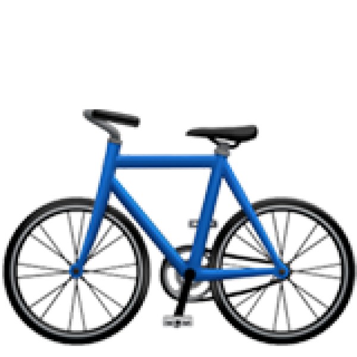
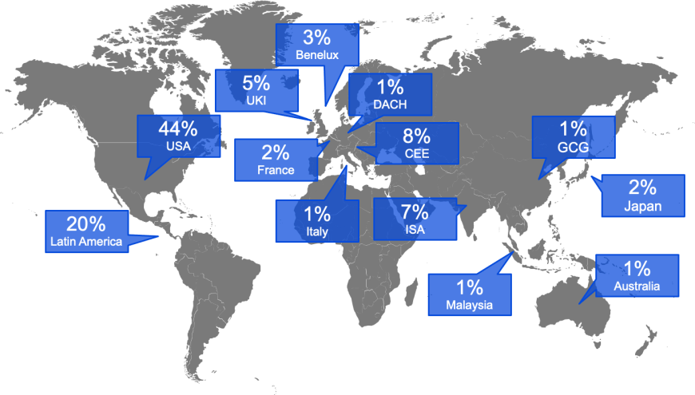
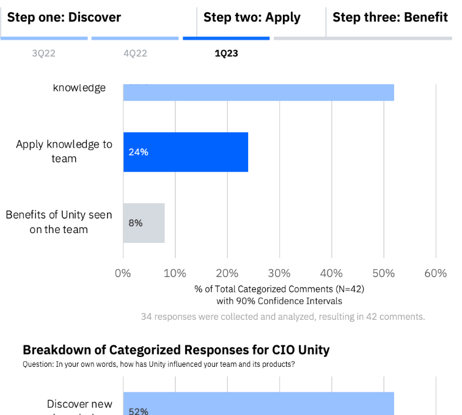
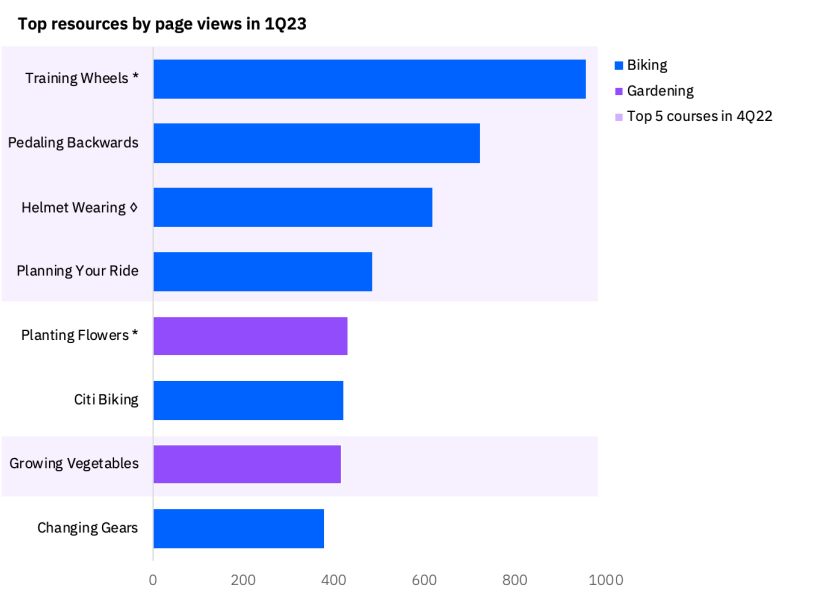
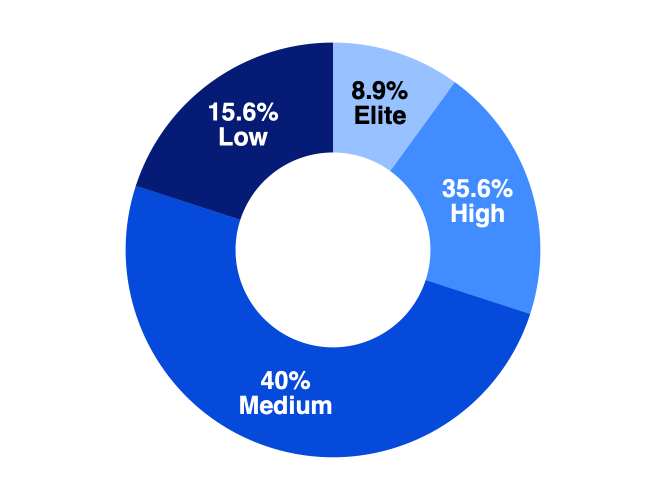
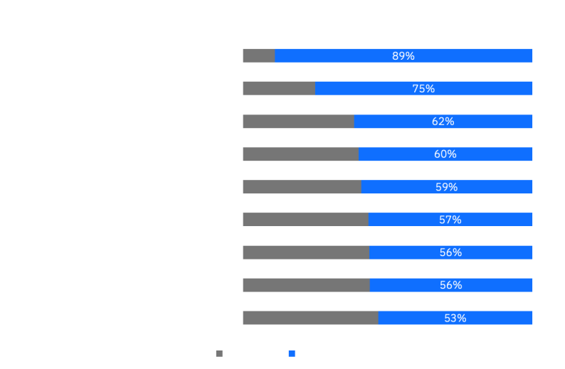
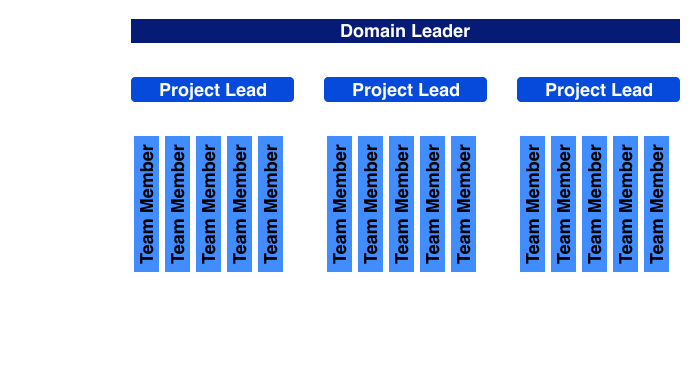

BACKGROUND
AskIBM: A virtual assistant bringing generative AI to the workplace
Building an AI-first digital assistant that could automate day-to-day business tasks such as drafting an email, translating a document or searching for information in order to enable all IBMers to focus on more strategic work
60 days
The AskIBM foundation was built in 60 days with watsonx.ai
30k+ documents
Over 30,000 documents were ingested into AskIBM
THE PRODUCT
Our new learning platform
Unity is a learning platform where you learn two different skills . It’s internal-only, so let’s pretend those skills are...
Gardening
Teams struggle to understand the best type of gardener to request for their project goals. Sometimes they staff gardeners, but are actually looking for lawn mowing tasks.
IBMers need a way of learning the basics of gardening so that they can make the right requests.

Biking
Development teams are essential to the business and helping them bike effectively is critical. Some teams are unsure of where to begin with their training wheels.
IBMers need a way of learning the basics of biking so that they can work effectively.
BUSINESS VALUE
"Individually, a single designer's impact may be limited, but fostering a cultural shift holds the power to scale that impact exponentially."
USER RESEARCH SPOTLIGHT: MEASURING PRODUCT IMPACT
Mixed Methods
Survey: What impact has CIO Unity made during it’s first 6 months of release?
Prior to this, there was no way to measure Unity’s business impact. This formed the baseline that we’ll refer to and build upon every 6 months.
Understand the business impact of CIO Unity resources.
Survey invites were distributed via email and slack to a nonrandom sample of IBMers in March 2023.
- x% response rate
- ~300 responses
- 6 minutes

*Numbers and specific details have been fictionalized or removed due to confidentiality.
OUTCOMES:
DESIGN
BUSINESS
MARKETING
Qualitative
There is a gap between discovering knowledge and applying it to their teams.
Respondents provided open-text answers reflecting the impact of Unity on their team. I categorized their responses and a pattern of 3 stages emerged.
-
There is a
disconnect between learning the course and applying it to their teams. The majority of users were still in the learning phase with Unity, so they were not seeing the benefits yet. -
Recommendation: future efforts should explore ways to move the needle from discovering courses to applying them to their products.
“CIO Unity…helps us to discover how to apply biking techniques in our daily work. But we need to apply it. ”

Quantitative
Overall, the design of Unity is well received and users prefer the biking over gardening.
We evaluated Unity usage trends were evaluated, revealing an excellent NPS and the most popular courses over time.
-
Unity had a
high NPS score, revealing excellent user experience overall with the product. -
Biking courses saw more traffic than gardening courses. The top biking courses are consistent across the last 2 quarters. - There were some nuances found in the specific courses, which are protected under NDA and cannot be disclosed publicly.
-
Signals of
progress towards organic usage of Unity was found, as less course-specific events were conducted this quarter but traffic was not as impacted.

OUTCOMES:
DESIGN
BUSINESS
MARKETING
We shifted our analysis efforts to case studies due to our small sample size.
Unity is still a new product, with only about 300 active users, so our sample size of those responding to the survey was small and difficult to establish statistical significance.
- As a result, we did a deep dive into specific teams in order to understand the impact of using Unity.
- This also enables us to track these teams over time. In future research, we plan to explore how the teams have continued to develop.

Mixed Methods
Gardening Case Study: IBM Seller Incentives
The IBM Seller Incentives (ISI) team attributes Unity to their +7 point increase in Plant Health, a popular metric used to measure gardening across the industry.
- ISI was struggling with gardening across the last couple years, but began using Unity last quarter to refresh their skills and saw a 7-point increase in their metrics.
- Even with a gardener embedded on their team, ISI reports high impact from Unity resources.
“We have Plant Health metrics [to show impact]... Unity enforced our need for additional training. ”
-Manager
-Manager

Mixed Methods
Biking Case Study: Pricing Systems Teams
A manager in the Pricing Systems group praised Unity and attributed a large metric increase to the Unity courses.
- Although I am unable to disclose the metric, this is a popular measurement used across the industry, so increases show significant impact.
- After Unity exposure, 22/45 Pricing Systems projects showed high or elite metrics in February 2023.
“We have a number of [measurements] to show significant impact. ”
-Pricing Systems
-Pricing Systems

OUTCOMES:
DESIGN
BUSINESS
MARKETING
Qualitative
Marketing is a huge part of spreading awareness and Unity impact.
As we tried to reach as many Unity users as possible, we broke down the CIO organization domains that they stemmed from and how much awareness they had of Unity.
- CIO Design (the organization I’m part of) had the highest awareness, as expected.
- This calls for additional research into why the lowest group of domains showed less awareness and determine improvements.

Qualitative
Evaluating the impact of Unity labs: our team outreach program.
Our OCM team has been running labs over the past 3 months to help 12 leaders implement Unity courses on their teams.
- All leaders reviewed courses and 7/12 have brought them back to their teams, resulting in 18 teams or 108 people applying Unity courses.
- A case study with the Q2C team shows the impact of learning one of the biking practices on their team. The team is moving twice as fast due to learning to ride their bike.
- Previous research has shown the impact of course-specific events to increase team member engagement. Unity Labs show promise for working with leaders to increase promotion and top-down team usage.
“Other leaders are missing out on this opportunity .”
-Domain leader
-Domain leader
